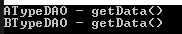
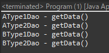
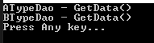

[Design pattern] 1-4. デザインパターンの抽象ファクトリーパターン(Abstract factory pattern)
こんにちは。明月です。
この投稿はデザインパターンの抽象ファクトリーパターン(Abstract factory pattern)に関する説明です。
デザインパターンの生成パターンの中で一番複雑なパターンの抽象ファクトリーパターン(Abstract factory pattern)です。
構造は複雑ですが、細かく見るとファクトリーメソッドパターンでファクトリーをクラスで作成してその上に抽象インターフェースによりファクトリーを取得するし、そのファクトリーでクラスを取得する構造です。
つまり、ファクトリーメソッドパターンが重畳していると思えば良いです。

#pragma once
#include <stdio.h>
#include <iostream>
using namespace std;
// 抽象クラス
class IDao {
public:
// 抽象メソッド
virtual string getData() = 0;
};
// 抽象ファクトリーメソッド
class IFactory {
public:
// 抽象メソッド (IDao タイプのクラスをリターンする。)
virtual IDao* getTypeDao() = 0;
};
// ATypeDAO クラス, IDao 抽象クラスを継承
class ATypeDAO : public IDao {
public:
// 関数再定義
virtual string getData() {
// string値をリターン
return "ATypeDAO - getData()";
}
};
// ファクトリークラス, IFactory 抽象ファクトリーメソッドを継承
class AFactory : public IFactory {
public:
// 関数再定義してATypeDAOクラスのインスタンスをリターンする。 클래스의 인스턴스를 리턴한다.
virtual IDao* getTypeDao() {
return new ATypeDAO();
}
};
// BTypeDAOクラス, IDao 抽象クラスを継承
class BTypeDAO : public IDao {
public:
// 関数再定義
virtual string getData() {
// string値をリターン
return "BTypeDAO - getData()";
}
};
// ファクトリークラス, IFactory 抽象ファクトリーメソッドを継承
class BFactory : public IFactory {
public:
// 関数再定義して BTypeDAO クラスのインスタンスをリターンする。
virtual IDao* getTypeDao() {
return new BTypeDAO();
}
};
// ファクトリーパターン、パラメータの値によりファクトリークラスのインスタンスをリターンする。
IFactory* getFactory(int type) {
// 0の値ならAFactoryクラスのインスタンスをリターン
if (type == 0) {
return new AFactory();
}
// 0の値ではないならBFactoryクラスのインスタンスをリターン
else {
return new BFactory();
}
}
// 実行関数
int main() {
// ファクトリー関数からファクトリーインスタンスを取得する。
IFactory* factory = getFactory(0);
// 関数を通ってATypeDAOクラスのインスタンスを受け取る。(ここではビルドパターン(ここでまたファクトリーパターンを入れても良い))
IDao* dao = factory->getTypeDao();
// コンソールに出力
cout << dao->getData() << endl;
// メモリ解除
delete dao;
delete factory;
// ファクトリー関数からファクトリーインスタンスを取得する。
factory = getFactory(1);
// 関数を通ってBTypeDAOクラスのインスタンスを受け取る。(ここではビルドパターン(ここでまたファクトリーパターンを入れても良い))
dao = factory->getTypeDao();
// コンソールに出力
cout << dao->getData() << endl;
// メモリ解除
delete dao;
delete factory;
return 0;
}

上の例をみればFactoryクラスをgetFactoryという関数からインスタンスを受け取ります。
また、FactoryクラスにはgetTypeDaoを通ってインスタンスを受け取ります。私はここでビルドパターンを通ってIDaoを受け取りますが、getTypeDaoにパラメータを入れてまたファクトリーメソッドパターンを使えます。
// 実行関数があるクラス
public class Program {
// ファクトリーメソッドパターンでファクトリークラスを受け取る。
private static IFactory getFactory(String type) {
// 入力値がAならAFactoryクラスのインスタンスをリターン
if ("A".equals(type.toUpperCase())) {
return new AFactory();
// 入力値がBならBFactoryクラスのインスタンスをリターン
} else if ("B".equals(type.toUpperCase())) {
return new BFactory();
}
// 条件に合わなかったらnull
return null;
}
// 実行関数
public static void main(String[] args) {
// ファクトリーメソッドパターンでファクトリークラスを受け取る。
var factory = getFactory("A");
// ここでまたgetType関数を通ってAType1Daoクラスのインスタンスを受け取ってgetData()関数のリターン値をコンソールに出力
System.out.println(factory.getTypeDao(1).getData());
// ここでまたgetType関数を通ってAType2Daoクラスのインスタンスを受け取ってgetData()関数のリターン値をコンソールに出力
System.out.println(factory.getTypeDao(2).getData());
// ファクトリーメソッドパターンでファクトリークラスを受け取る。
factory = getFactory("B");
// ここでまたgetType関数を通ってBType1Daoクラスのインスタンスを受け取ってgetData()関数のリターン値をコンソールに出力
System.out.println(factory.getTypeDao(1).getData());
// ここでまたgetType関数を通ってBType2Daoクラスのインスタンスを受け取ってgetData()関数のリターン値をコンソールに出力
System.out.println(factory.getTypeDao(2).getData());
}
}
// インターフェース
interface IDao {
// 最終クラスから受け取ったデータ
String getData();
}
// 抽象ファクトリーメソッドインターフェース
interface IFactory {
// ここもファクトリーメソッドパターンを通ってIDaoクラスのインスタンスを受け取る。
IDao getTypeDao(int type);
}
// AType1Daoクラス、IDaoインターフェースを継承
class AType1Dao implements IDao {
// 関数再定義
@Override
public String getData() {
// 結果値をリターン
return "AType1Dao - getData()";
}
}
// AType2Daoクラス、IDaoインターフェースを継承
class AType2Dao implements IDao {
// 関数再定義
@Override
public String getData() {
// 結果値をリターン
return "AType2Dao - getData()";
}
}
// ファクトリークラス, IFactory 인터페이스를 상속
class AFactory implements IFactory {
// 関数再定義
@Override
// ファクトリーメソッドパターンを通ってIDaoタイプのクラスを取得
public IDao getTypeDao(int type) {
// 値が1ならAType1Daoクラスのインスタンスをリターン
if (type == 1) {
return new AType1Dao();
// 値が2ならAType2Daoクラスのインスタンスをリターン
} else if (type == 2) {
return new AType2Dao();
}
// 条件に合わなかったらnull
return null;
}
}
// BType1Daoクラス、IDaoインターフェースを継承
class BType1Dao implements IDao {
// 関数再定義
@Override
public String getData() {
// 結果値をリターン
return "BType1Dao - getData()";
}
}
// BType2Daoクラス、IDaoインターフェースを継承
class BType2Dao implements IDao {
// 関数再定義
@Override
public String getData() {
// 結果値をリターン
return "BType2Dao - getData()";
}
}
// ファクトリークラス, IFactoryインターフェースを継承
class BFactory implements IFactory {
// 関数再定義
@Override
// ファクトリーメソッドパターンを通ってIDaoタイプのクラスを取得
public IDao getTypeDao(int type) {
// 値が1ならBType1Daoクラスのインスタンスをリターン
if (type == 1) {
return new BType1Dao();
// 値が2ならBType2Daoクラスのインスタンスをリターン
} else if (type == 2) {
return new BType2Dao();
}
// 条件に合わなかったらnull
return null;
}
}

上の例はJavaで作成した抽象ファクトリーパターン例です。
C/C++と違い、ファクトリークラスの中でビルドパターンを代わりにファクトリーメソッドパターンでインスタンスを取得します。
using System;
namespace Example
{
// インターフェース
interface IDao
{
// コンソールに出力
void Print();
}
// 抽象ファクトリーメソッドインターフェース
interface IFactory
{
// 抽象メソッド (IDao タイプのクラスをリターンする。)
IDao GetTypeDao();
}
// ATypeDAOクラス、IDao 抽象クラスを継承
class ATypeDao : IDao
{
// コンソールに出力する関数
public void Print()
{
// コンソールに出力
Console.WriteLine("ATypeDao - GetData()");
}
}
// ファクトリークラス, IFactory 抽象ファクトリーメソッドを継承
class AFactory : IFactory
{
// ATypeDaoクラスのインスタンスをリターン
public IDao GetTypeDao()
{
// ATypeDaoクラスインスタンスを生成
return new ATypeDao();
}
}
// BTypeDAOクラス、IDao 抽象クラスを継承
class BTypeDao : IDao
{
// コンソール出力関数
public void Print()
{
// コンソール出力
Console.WriteLine("BTypeDao - GetData()");
}
}
// ファクトリークラス, IFactory 抽象ファクトリーメソッドを継承
class BFactory : IFactory
{
// BTypeDaoクラスのインスタンスをリターン
public IDao GetTypeDao()
{
// BTypeDaoクラスのインスタンスを生成
return new BTypeDao();
}
}
// 実行関数があるクラス
public class Program
{
// ファクトリーメソッドパターンでファクトリークラスのインスタンスを取得する関数
private static IFactory GetFactory(String type)
{
// パラメータ値がAの場合
if ("A".Equals(type, StringComparison.OrdinalIgnoreCase))
{
// AFactoryクラスのインスタンスを生成してリターン
return new AFactory();
}
// パラメータ値がBの場合
else if ("B".Equals(type, StringComparison.OrdinalIgnoreCase))
{
// BFactoryクラスのインスタンスを生成してリターン
return new BFactory();
}
// 条件に合わなかったらnull
return null;
}
// 実行関数
public static void Main(string[] args)
{
// ファクトリーメソッドパターンの関数でファクトリーを取得する。
var factory = GetFactory("A");
// 取得したファクトリーでATypeDaoインスタンスのPrint関数を実行
factory.GetTypeDao().Print();
// ファクトリーメソッド関数でファクトリーを取得する。
factory = GetFactory("B");
// 取得したファクトリーでBTypeDaoインスタンスのPrint関数を実行
factory.GetTypeDao().Print();
// 任意のキーを押してください
Console.WriteLine("Press Any key...");
Console.ReadLine();
}
}
}

上の例はC/C++と同じく、ファクトリークラスでビルドパターンでインスタンスを取得して実行します。
私がFactoryクラスではなく、一般クラスをDaoというクラス名で作成しました。
なぜならこの抽象ファクトリーパターンがORMフレームワークで一番よく使うパターンからです。
例えば、データベースの各テーブルのDaoクラスを作成します。でも、仕様によりこれがOracleになれるし、Mssqlになれるし、Mysql(MariaDB)になれる可能性があります。
各データベースのシステムのテーブルの設計構造は同じだと思えば、この抽象ファクトリーパターンを使ったらOracle用Dao生成ファクトリーを生成することができるし、Mssql用Dao生成ファクトリーを生成することができます。
その以外にデータ管理や生成、PDF生成やExcel生成などで仕様により装置を区分する時、該当なクラスの構造は同じく作ろうと思えば、よく使えるパターンです。
ここまでデザインパターンの抽象ファクトリーパターン(Abstract factory pattern)に関する説明でした。
ご不明なところや間違いところがあればコメントしてください。
- [Design pattern] 3-2. 責任の連鎖パターン(Chain of responsibility pattern)2021/11/04 19:27:58
- [Design pattern] 3-1. ストラテジーパターン(Strategy pattern)2021/11/03 18:38:52
- [Design pattern] 2-7. ファサードパターン(Facade pattern)2021/11/02 19:32:31
- [Design pattern] 2-6. プロキシパターン(Proxy pattern)2021/11/01 19:42:44
- [Design pattern] 2-5. フライウェイトパターン(Flyweight pattern)2021/10/29 19:48:27
- [Design pattern] 2-4. デコレーターパターン(Decorator pattern)2021/10/28 20:11:13
- [Design pattern] 2-3. ブリッジパターン(Bridge pattern)2021/10/27 20:32:21
- [Design pattern] 2-2. コンポジットパターン(Composite pattern)2021/10/27 20:30:54
- [Design pattern] 2-1. アダプターパターン(Adapter pattern)2021/10/26 19:12:40
- [Design pattern] 1-5. プロトタイプパターン(Prototype pattern)2021/10/22 19:35:45
- [Design pattern] 1-4. デザインパターンの抽象ファクトリーパターン(Abstract factory pattern)2021/10/15 19:31:03
- [Design pattern] 1-3. ファクトリーメソッドパターン(Factory method pattern)2021/06/23 19:45:37
- [Design pattern] 1-2. ビルダーパターン(Builder pattern)2021/06/11 19:06:28
- [Design pattern] 1-1. シングルトンパターン(Singleton pattern)2021/06/09 19:40:05
- [Design Pattern] デザインパターンの紹介2021/06/08 20:42:36
- [Design pattern] 3-5. メメントパターン(Memento pattern)2021/11/16 20:01:36
- [Design pattern] 3-4. イテレータパターン(Iterator pattern)2021/11/15 19:31:28
- [CentOS] Linux環境(CentOS)でCassandra(NoSQL DB)をインストールする方法(DBeaverブラウザでNoSQL使い方)2021/11/12 17:33:58
- [Design pattern] 3-3. コマンドパターン(Command pattern)2021/11/05 17:01:42
- [Window] apache-tomcatでロードバランシング(Load balancing)する方法とセッションクラスタリング（セッション共有）2021/11/05 16:58:45
- [Window] Apacheでmod_jkとmod_proxyの差異、apacheでtomcatのwebsocketのプロキシフォーワードする方法2021/11/05 16:55:05
- [PHP] Apache環境の同じホスト中でPHPとJava(Servlet)を同時に起動、運用する方法2021/11/05 16:52:04
- [C#] 61. ウィンドウフォーム(Window form)でスレッド(Thread)を使い方、クロススレッド問題解決2021/11/04 19:29:51
- [Design pattern] 3-2. 責任の連鎖パターン(Chain of responsibility pattern)2021/11/04 19:27:58
- [Design pattern] 3-1. ストラテジーパターン(Strategy pattern)2021/11/03 18:38:52
- [C#] 60. ウィンドウフォーム(Window form)のイベント設定する方法2021/11/02 21:18:08
- [Design pattern] 2-7. ファサードパターン(Facade pattern)2021/11/02 19:32:31
- [Design pattern] 2-6. プロキシパターン(Proxy pattern)2021/11/01 19:42:44
- [Design pattern] 2-5. フライウェイトパターン(Flyweight pattern)2021/10/29 19:48:27
- [C#] 59. ウィンドウフォーム(Window form)にコントロール(Control)を使い方法2021/10/29 19:45:43